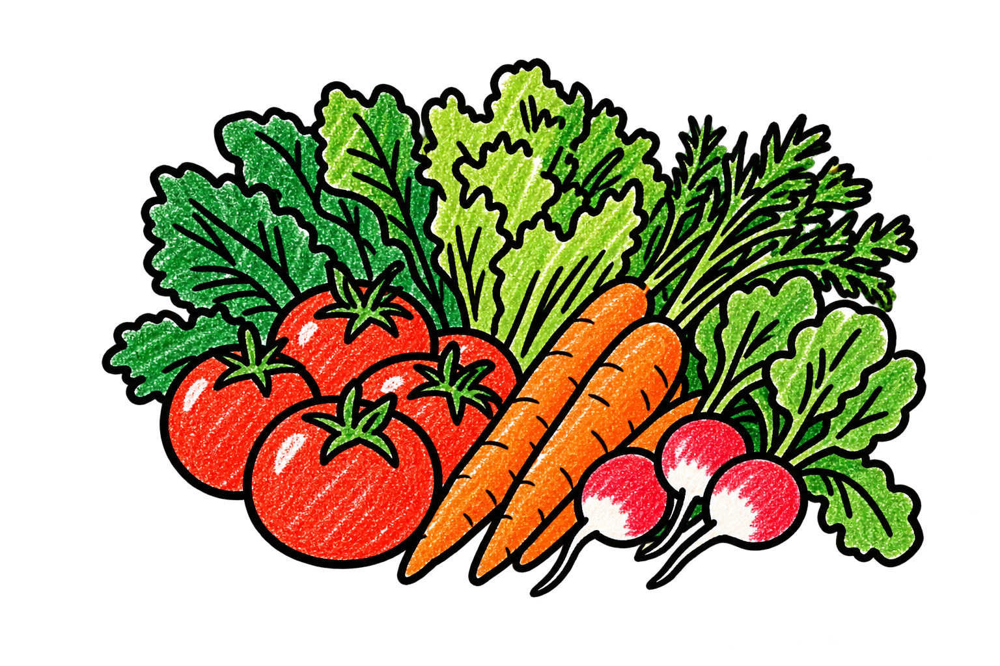

Abierto según fuente Horario por confirmar
COMPRA CERCA
Lo bueno
está a la vuelta.
Comercios que ya participan en BARRIO. Precios y promociones son información proporcionada por cada negocio.
ESPACIO COMERCIANTE
Buenos días,
María.
Tu información se actualiza cuando llegan registros o análisis externos.
MS
Verdulería San MartínTianguis de la Guerrero · perfil 86% completo
ÚLTIMO CORTE
DEMO · análisis externo
Inventario recibido
RECOMENDACIONES
✦
Para tu siguiente jornada
◔Registra tu negocio por WhatsApp
1. Cuéntanos de tu negocio · 2. Comparte tu tianguis · 3. Envía una foto · 4. Confirma productos.
INTELIGENCIA TERRITORIAL
La economía
que ya existe.
Una lectura respetuosa y agregada del comercio tradicional. Las cifras operativas BARRIO están marcadas como demostración.
FUENTE OFICIAL
Lunes
Tianguis por día
BARRIO · DEMO